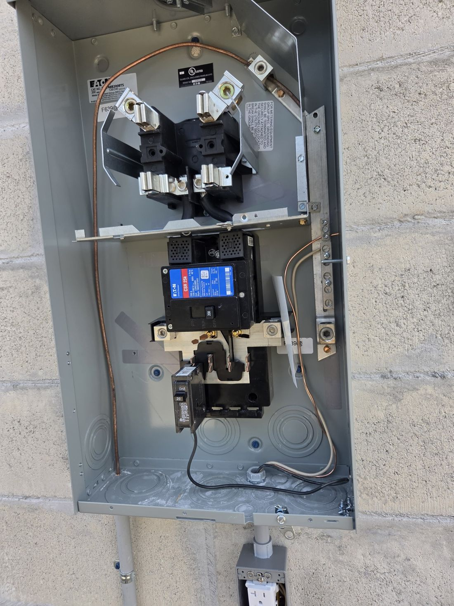

How to Set Up a Meter Main Combo
A meter main combo is the meter base and the main service disconnect in one outdoor enclosure — the utility meter on top, the main breaker below it. Sharma's standard service: meter outside, interior panel directly inside, back to back. This lesson walks the whole set-up, start to inspection.
The picture — what goes where
Underground service shown, grounded to rods. On an overhead service the same combo is fed from a mast/weatherhead above it instead — the set-up below the meter does not change. And where the footing has a UFER (concrete-encased electrode), the GEC lands there — full UFER section below.
From a real Sharma job — the actual gear
These are Sharma's own photos of a 200A meter main combo going in on a block wall. Tap any photo to see it full size — read the labels, that's part of the lesson.




Before you start — the Sharma set-up
- Confirm the meter/panel relationship first. Sharma standard so far: meter and panel are back to back — combo on the exterior of the wall, panel directly inside. If a plan shows anything else, ask the foreman before you mount anything.
- Gear: Sharma usually runs Siemens — meter main combo (example: Siemens MM0202B1200, 200A main) and interior panel Siemens, Type QP. Match the plan and the service size — 200A is the standard Sharma house service.
- Location: where the serving utility wants it, reachable, not behind gates or AC units, with clear working space — 3 ft deep, 30 in wide, 6 ft 6 in headroom (NEC 110.26). Meter height is set by the utility's rules — check them, don't guess.
- Permit + utility: permit pulled, and the utility's service requirements (lateral point, conduit size, trench) confirmed before trenching or setting the mast.
The UFER — concrete-encased electrode
Named for Herbert Ufer. A UFER is a grounding electrode buried in the concrete footing itself: at least 20 ft of either ½-inch rebar (one piece, or pieces tied together with steel tie wire) or bare copper conductor, #4 AWG or larger, encased in at least 2 inches of concrete, near the bottom of the footing, in direct contact with the earth. Concrete holds moisture against the steel/copper, so a UFER is one of the best electrodes there is — better than a driven rod.
Working the UFER on a Sharma job
- Before the pour: the UFER is made while the footing steel is going in — confirm it's on the plan/footing and that the stub will come up at the service location, where the combo/panel will be. Once the concrete is poured, you can't add one.
- Protect the stub. The rebar or copper tail that sticks up for the connection is the whole connection point. Don't let it get cut off, bent flat, or buried. If a stub gets cut, tell the foreman — don't just drive a rod and stay quiet.
- Connect it at the service: GEC from the combo's ground/neutral bar to the stub with a listed clamp/connector made for rebar/concrete-encased use. Size: #4 copper is the largest GEC the code requires to a UFER (250.66(B)) — bigger is allowed, never required.
- It still counts as the system: a UFER on its own satisfies the grounding electrode requirement — no supplemental rod is required for a concrete-encased electrode the way one is for a single rod. If rods or a metal water pipe are also present, they all bond together into the one system (250.50).
- No UFER on the plan? Then it's rods: two 8 ft rods, 6 ft apart, per Step 5. UFER is used when the plan/footing actually has one — never claim one that isn't there.
Step by step
1 · Mount the combo
Fasten the enclosure plumb and solid to the wall at the utility's meter height, through the mounting holes into structure — not just siding. Seal the top and sides where the utility/AHJ requires it. Keep it dead straight: a crooked combo is the first thing an inspector (and a builder) sees.
2 · Bring the service in
Underground: riser conduit up into the bottom of the combo, sized per the utility (2 in PVC is typical on Sharma houses — confirm), expansion fitting where required, trench and warning tape per utility spec. Overhead: mast through or beside the roof line with the weatherhead above the utility's attachment point, drip loop left for the utility.
NEC 230.28 mastNEC 300.5 underground3 · Land the service conductors
Size for the service: a 200A dwelling service can use 2/0 copper or 4/0 aluminum service conductors under the 83% dwelling rule (Table 310.12). Land line conductors on the meter/main lugs, neutral on the neutral bar. Anti-oxidant and a wire brush on aluminum. Torque every lug to the label spec with a torque tool — "tight" is not a spec.
NEC 310.12NEC 110.14(D) torque4 · Bond the neutral here — and only here
The meter main combo is the service equipment: this is where the neutral is bonded to the enclosure and to ground. Every panel after it (including the interior panel) is fed with grounds and neutrals separated — 4-wire feed, neutral bar isolated, no bonding screw downstream.
NEC 250.24NEC 250.1425 · Grounding electrode system — UFER first, then rods
Check for the UFER first — typically, this is the ground. On Florida new construction the footing usually carries a concrete-encased electrode (the UFER — taught in full above). If it's there, it must be used: every electrode present at the building gets bonded into one system (250.50). Land the GEC on the UFER stub — to a concrete-encased electrode the GEC never needs to be larger than #4 copper (250.66(B)).
Ground rods: drive two 8 ft rods, at least 6 ft apart where rods are the electrode (one rod is only enough if it tests 25 Ω or less). The GEC to a rod never needs to be larger than #6 copper (250.66(A)). Many Sharma services land both — UFER plus rods, bonded together. Bond the metal water pipe where present, and install the intersystem bonding termination at the service for cable/phone/fiber grounds.
NEC 250.50NEC 250.52(A)(3) UFERNEC 250.53NEC 250.946 · Surge protection
Dwelling services require a Type 1 or Type 2 surge protective device at the service. Many Sharma combos carry it in the enclosure or as a listed accessory — if it's not built in, install it at the service/panel per its listing.
NEC 230.677 · Feed the interior panel, back to back
Short nipple through the wall from the combo's load side into the interior panel directly inside. Feed it as a feeder (grounds/neutrals separate in the panel, Step 4). Label the panel's main as fed from the service disconnect outside.
8 · Label it like an inspector reads it
- Main breaker marked as the service disconnect (230.70(B)).
- For a house, that same disconnect is the emergency disconnect — marked "EMERGENCY DISCONNECT, SERVICE DISCONNECT" (230.85).
- Any extra breaker spaces in the combo labeled for what they feed — the 20A GFCI receptacle under the combo, for example.
Quick numbers
| Item | Standard |
|---|---|
| House service size | 200A (confirm on plan) |
| Service conductors, 200A dwelling | 2/0 Cu or 4/0 Al — Table 310.12 (83% rule) |
| Sharma combo | Siemens meter main — e.g. MM0202B1200, 200A main |
| Interior panel | Siemens Type QP, back to back |
| UFER (concrete-encased) | 20 ft min of ½-in rebar or bare #4 Cu, encased 2 in+ in the footing — 250.52(A)(3) |
| GEC to UFER | #4 Cu is the largest required — 250.66(B) |
| Ground rods | 2 × 8 ft, min 6 ft apart |
| GEC to rods | #6 Cu max required — 250.66(A); size other electrodes by Table 250.66 |
| Working space | 3 ft deep × 30 in wide × 6 ft 6 in high — 110.26 |
| Surge protection | Type 1 or 2 SPD required — 230.67 |
Inspection-ready checklist
Tap each item as you finish it on the job. Your checkmarks save on this phone.
0 of 13 doneCommon fails — don't be these
- Ignoring — or cutting — the UFER stub. If the footing has a concrete-encased electrode it must be bonded in (250.50). A cut stub and silence is how a service ends up with no real ground.
- Bonding the neutral again in the interior panel. One bond, at the service. A second bond puts neutral current on the ground path.
- One ground rod and no test. Unless you can prove 25 Ω or less, the second rod is required.
- Hand-tight lugs. Loose service lugs are a heat/fire call later. Torque wrench, label value.
- No surge device. 230.67 has required it on dwelling services since the 2020 code.
- Combo buried behind the AC unit or a gate. Working space and utility access are checked first on inspection.
- Guessing the meter height or lateral point. Those are the utility's call — a wrong guess is a tear-out.
Content pending final review by Sharma's master electrician. Follow your foreman and the plans — they win over any app.